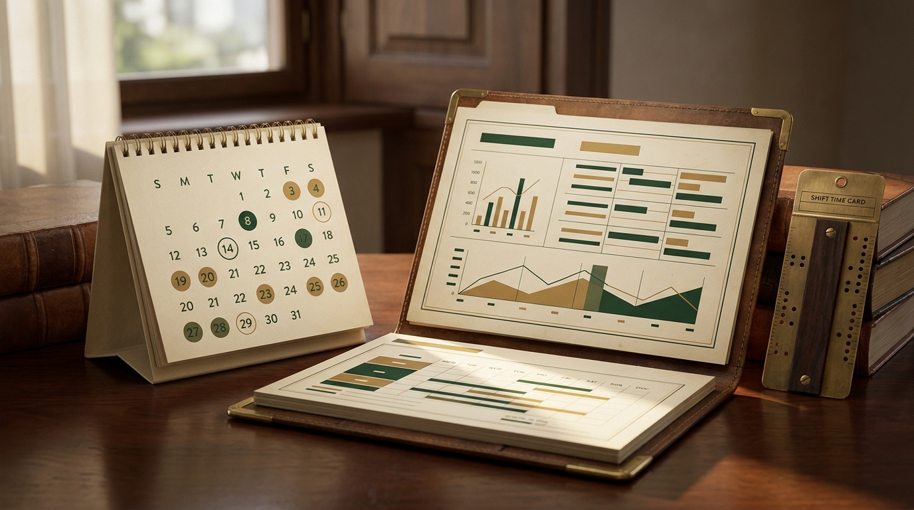

Ferie nel pubblico impiego: le indennità di turno restano dovute
Le indennità di turno, notturno e festivo spettano ai dipendenti pubblici anche durante le ferie. Lo confermano gli orientamenti di Cassazione e Corte di Giustizia UE: la retribuzione feriale deve corrispondere a quella ordinaria, comprese le voci accessorie ricorrenti. Una lettura che incide su buste paga e arretrati. Vediamo perché conta e come muoversi.

Il fatto
Il tema riguarda un punto pratico e ricorrente: cosa deve contenere la retribuzione percepita durante le ferie da un dipendente pubblico che, nel servizio ordinario, lavora su turni, di notte o nei giorni festivi.
La risposta consolidata è che la paga feriale non può ridursi alla sola retribuzione base. Le indennità collegate stabilmente all'attività lavorativa - turno, lavoro notturno, lavoro festivo - vanno conteggiate anche quando il dipendente è in ferie. Diversamente, il lavoratore subirebbe una perdita economica nel periodo di riposo, con l'effetto di disincentivare la fruizione delle ferie stesse.
Inquadramento normativo
Il riferimento di partenza è l'articolo 7 della Direttiva 2003/88/CE sull'organizzazione dell'orario di lavoro, che garantisce un periodo di ferie annuali retribuite. La Corte di Giustizia dell'Unione Europea ha più volte chiarito che la "retribuzione" delle ferie deve essere quella ordinaria: il lavoratore deve trovarsi, durante il riposo, in una condizione economica comparabile a quella dei periodi di lavoro.
Ne deriva un principio operativo: le componenti retributive intrinsecamente collegate allo svolgimento delle mansioni e percepite con continuità entrano nel calcolo della paga feriale. Restano fuori, invece, le voci occasionali o destinate a coprire spese specifiche sostenute solo durante il servizio effettivo.
La Corte di Cassazione ha recepito questa impostazione, applicandola anche al pubblico impiego. La distinzione decisiva non è tra settore pubblico e privato, ma tra indennità stabili e ricorrenti, da computare, e indennità episodiche o meramente compensative di costi, da escludere.
Implicazioni pratiche
Per il dipendente pubblico turnista l'effetto è concreto. Se nella prassi le indennità di turno, notturno e festivo venivano azzerate durante le ferie, quella decurtazione può risultare illegittima. Ciò apre alla possibilità di rivendicare le differenze retributive maturate, nei limiti della prescrizione.
Per le amministrazioni l'impatto è duplice. Sul piano corrente, occorre adeguare i criteri di calcolo della retribuzione feriale. Sul piano del contenzioso, cresce l'esposizione a richieste di arretrati da parte del personale con turnazioni stabili.
Un punto merita attenzione: non tutte le indennità seguono la stessa sorte. La valutazione è caso per caso e dipende dal titolo dell'emolumento, dalla sua continuità e dalla disciplina contrattuale collettiva applicabile. Per questo è essenziale leggere il CCNL di comparto e la voce specifica indicata in busta paga.
La prescrizione, inoltre, è variabile da presidiare. I crediti retributivi seguono termini definiti e il decorso può comportare la perdita delle somme più risalenti. Agire con tempestività non è un dettaglio.
Cosa fare in concreto
- Verificate le buste paga dei periodi di ferie: controllate se le indennità di turno, notturno e festivo sono state azzerate o ridotte rispetto ai mesi di servizio ordinario.
- Recuperate il vostro CCNL di comparto: individuate la natura di ciascuna indennità (stabile e ricorrente oppure occasionale) per capire quali voci sono effettivamente computabili.
- Ricostruite lo storico delle turnazioni: raccogliete ordini di servizio, prospetti turni e cedolini, perché la prova della continuità della prestazione è dirimente.
- Calcolate l'orizzonte di prescrizione: prima di rivendicare gli arretrati, verificate quali mensilità sono ancora esigibili ed evitate decadenze.
- Valutate un'interlocuzione preventiva con l'amministrazione: una richiesta documentata può favorire una soluzione conciliativa prima del contenzioso.
Consigliamo di non procedere a calcoli o richieste in autonomia senza una verifica preliminare del titolo di ciascuna indennità: l'esito dipende dalla qualificazione corretta delle singole voci e dalla disciplina contrattuale applicabile.
Disclaimer
Contributo informativo a cura di Tamburro & Partners - Avv. Giuseppe Tamburro. Non costituisce parere legale.
Ogni storia di lavoro ha i suoi tempi.
Se gestisci HR e vuoi un confronto su contenzioso, ispezioni o licenziamenti, scrivi allo studio. Ti rispondiamo entro un giorno lavorativo.